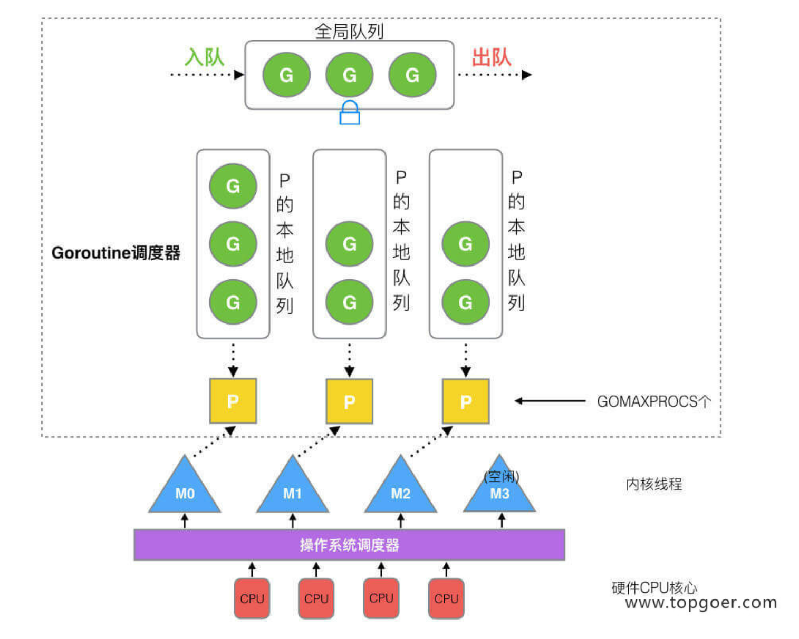

Go 协程
Go 协程
reference: 《go专家编程》
- 线程池： 避免在高并发场景中频繁创建线程而造成不必要的开销，预先保存一定数量的线程，新任务以任务队列的方式被取出，而不是创建新的线程。
Goroutine调度器
- G(Goroutine): Go协程，go关键词创建
- M(Machine): 工作thread
- P(Processor): 包含运行Go代码的必要资源，也可以调度Goroutine

M是操作系统调度的线程，M必须持有P才能执行G，P本身维护可包含多个G的队列，同时存在一个全局队列存放等待运行的G
GOMAXPROCS一般设置的比CPU核数要大一些。
- 当M被系统调用而阻塞时，线程会释放绑定的P而hand off给别的线程。
- 当本线程没有G（包括全局队列），则会向其它线程偷取一半的G放入自身对应的P维护的队列中(work stealing)。
- 而如果M获取不到空闲的P去执行G时，则会进入休眠期，等待唤醒。另外M与P成功绑定，但队列中无G，则M自旋。
本博客所有文章除特别声明外，均采用 CC BY-NC-SA 4.0 许可协议。转载请注明来自 Legendary！